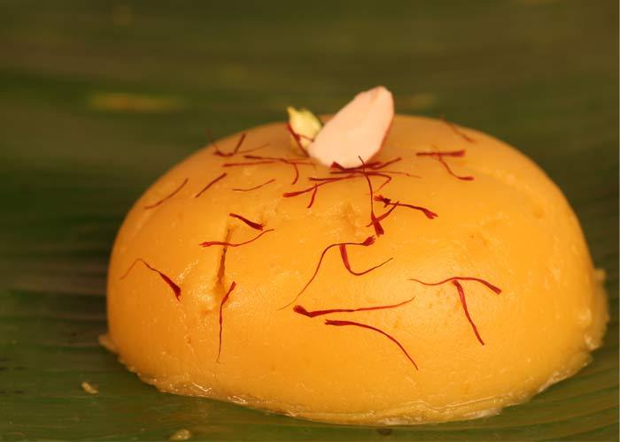

Almonds - 1 cup (around 80 almonds)
Milk - 3-4 tbsp
Water - 1/4 cup
Ghee - 3 tbsp
Sugar - 1 cup (or as needed)
Saffron - a pinch
Kesari Powder/ Yellow food colour - a pinch
Soak the almonds in hot water for 2 hours and peel the skin off the almonds. To make it faster, boil the almonds with the water for 15-20 minutes and peel them or use store bought peeled almonds.
Grind the almonds in a blender or mixie along with the milk to make a paste. Add very little milk just to help the mixie moving.
Heat the sugar with 1/4 cup of water in a heavy bottomed pan. Bring it to boil to make a simple syrup. (Note :- It is best to use a non stick pan to prevent sticking at the bottom.)
Add the milk-almond paste and keep stirring constantly to prevent it from getting burnt at the bottom. It will thicken very quickly.
Add saffron strands and food colour while mixing it. When the mixture cooks, there can be lot of hot splattering, so keep a lid handy.
Once it thickens, keep adding ghee little by little (1 tsp at a time) and keep stirring continuously. When the splattering reduces, it is an indication that the mixture is almost cooked.
Continue mixing until the halwa no longer sticks to the pan and forms a single mass. It starts shining with the ghee separating out as tiny droplets. (The perfect Halwa consistency!!!)
Garnish with fresh nuts.Almond halwa is ready to be served.